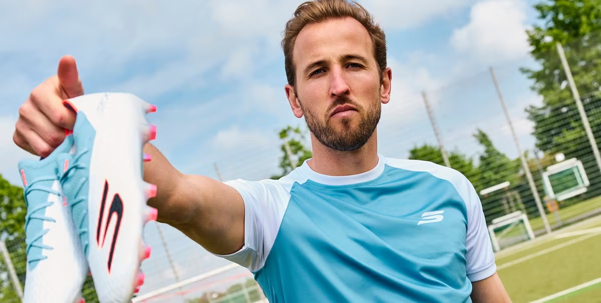
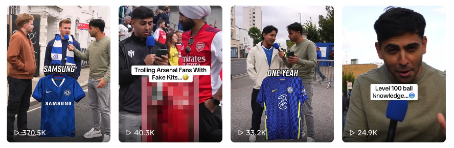
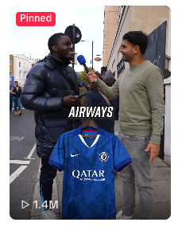

Oversight of all UK and EU marketing strategy, driving brand consideration and commercial outcomes through brand partnerships, owned and earned media.

Built the marketing function and led European expansion, setting foundations across brand, digital, performance, SEO/GEO content, and partnerships to drive commercial growth. Directed multi-market integrated campaigns, owning strategy, testing, budgets and forecasting across paid and organic social, email, print, and paid media; including creation of content and creatives for My Club and partners.
Led end-to-end partnership and sponsorship activation with rigorous evaluation, revamped account management and client leadership covering compliance and asset management, as well as delivery of new business pitch decks and case studies while overseeing creator/partner agencies.

